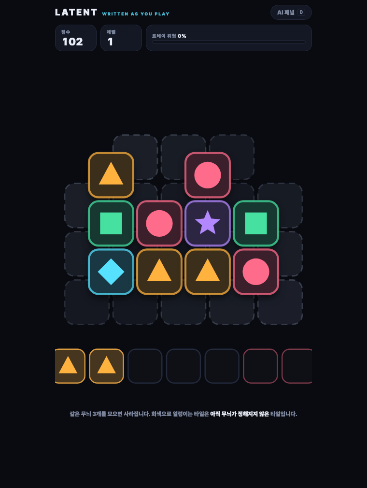

NHN GAME × AI 해커톤 · NAN 2026 · 사전과제 제출물 ③
덮인 타일은 아직 정해져 있지 않습니다.
층층이 쌓인 타일을 위에서부터 걷어내 같은 무늬 3개를 모으는 퍼즐입니다. 아래 트레이는 7칸이고, 3개가 모이면 사라집니다. 짝을 못 맞춘 채 7칸이 다 차면 그 판은 끝입니다. 여기까지는 익숙한 형태입니다.
다른 점은 하나뿐입니다. 레벨이 미리 존재하지 않습니다. 덮여 있는 타일에는 무늬가 그려져 있지 않습니다 — 숨겨 둔 것이 아니라 아직 결정되지 않은 것이고, 위가 걷혀 드러나는 순간 AI가 당신의 그 시점 상황을 보고 무늬를 정합니다.
링크를 클릭하면 브라우저에서 바로 실행됩니다. 설치·로그인·계정·결제가 필요 없고, 유료 API나 별도 라이선스도 사용하지 않습니다. 최초 로드 이후에는 네트워크가 끊겨도 정상 동작합니다.
더미의 타일을 전부 걷어내면 그 레벨을 클리어하고 다음 판으로 넘어갑니다. 레벨은 조금씩 커지고, 트레이가 가득 차면 런이 끝납니다. 얼마나 멀리 가느냐가 기록입니다.
타일을 한 번 누르는 것이 전부입니다. 모바일에서는 탭, 데스크톱에서는 클릭. 드래그도, 길게 누르기도, 제스처도 없습니다.
| 상황 | 결과 |
|---|---|
| 가져오기 | 위에 아무것도 덮이지 않은 타일만 누를 수 있습니다. 누르면 아래 트레이로 들어갑니다. |
| 완성 | 트레이에 같은 무늬 3개가 모이면 즉시 사라지고 슬롯 3칸이 돌아옵니다. |
| 결정 | 타일을 가져오면 그 아래가 드러납니다. 드러나는 바로 그 순간 무늬가 정해집니다. |
| 종료 | 트레이 7칸이 모두 차고 완성이 없으면 런이 끝납니다. |
회색으로 일렁이는 타일은 뒷면이 아닙니다. 무늬가 아직 없는 타일입니다. 그래서 뒤집어 놓은 카드처럼 그리지 않고, 아직 쓰이지 않은 빈칸으로 그립니다. 이 게임에서 가장 중요한 것이 화면에 그대로 드러나 있습니다 — 패널을 열지 않아도.
무늬가 즉석에서 정해진다면 플레이어가 할 일이 없어 보일 수 있지만, 반대입니다. 선택은 어떤 타일을 어떤 순서로 가져올 것인가입니다.
외톨이 무늬를 몇 개까지 들고 갈 것인가, 지금 당장 사라지는 쪽을 택할 것인가 판을 먼저 열어 둘 것인가. 매 탭이 그 판단입니다. 그리고 시스템은 매 탭마다 그 판단을 솔버의 최선수와 비교해 채점하고 있습니다.

우상단 “AI 패널” 버튼 또는 D 키로 열립니다. 이 게임의
AI가 무엇을 근거로 방금 그 무늬를 썼는지 숨기지 않고 전부 보여줍니다.
기술적 세부 사항은 별도 제출물 ④ AI 활용 기술 문서에 정리했습니다.
위 플레이 링크를 클릭하면 끝입니다. 설치 과정이 없습니다. 모바일 브라우저와 데스크톱 브라우저 모두에서 동작하며, 세로 화면을 기준으로 설계했습니다.
git clone https://github.com/TaraGamesDev/latent-nan2026.git
cd latent-nan2026
npm install
npm run dev # 개발 서버 — http://localhost:5173
npm run build # docs/ 로 정적 빌드 (GitHub Pages가 서빙하는 산출물)
npm run bench # 헤드리스 엔진 검증
Node.js 20 이상이면 동작합니다 (개발 환경은 Node 22.14). npm run bench는
심사자가 직접 검증하는 데도 쓸 수 있습니다 — 봇 페르소나로 전체 게임을 실제
tap() 경로로 돌려 세 가지를 단언합니다: 완결성 불변식이
유지되는가, 약한 플레이어는 반드시 지는가, 숙련도 추정이 페르소나를 마땅한 순서로
정렬하는가.
개인 참가입니다. 기획·게임 디자인·엔진·AI 시스템·UI·문서 전부를 직접 작성했으며, 개발 과정에서 Anthropic Claude를 코딩 협업 도구로 사용했습니다. 사용 내역은 ④ AI 활용 기술 문서에 빠짐없이 기재했습니다.
외부 에셋은 사용하지 않았습니다. 이미지·사운드·폰트 파일이 저장소에 하나도 없으며, 화면의 모든 그래픽은 코드로 그려집니다. 런타임 의존성도 0개이고, 빌드 산출물은 JS 25KB · CSS 8KB입니다.